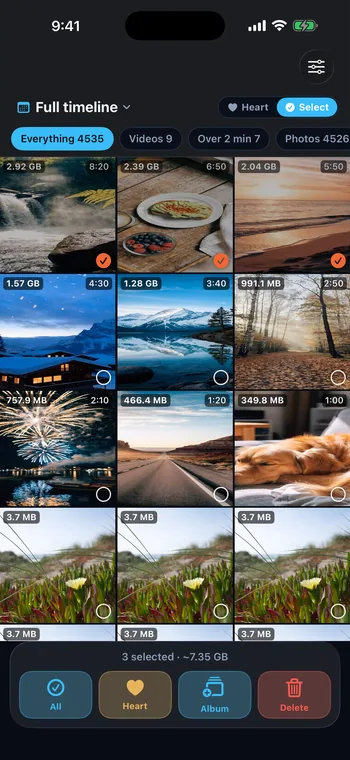
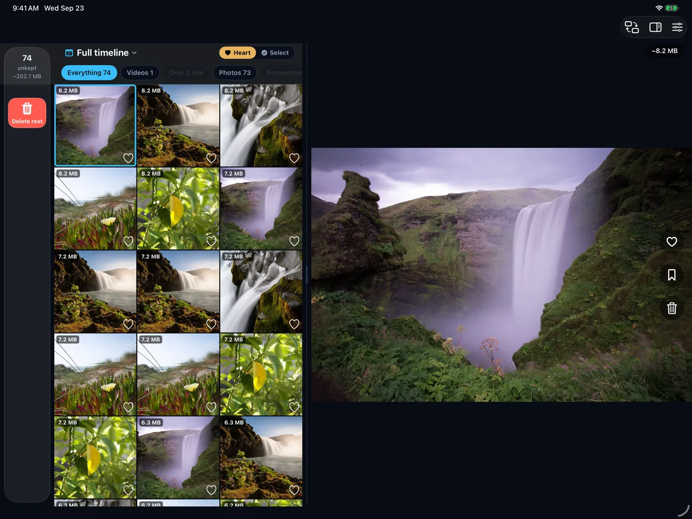

01
Purpose
Which data does the task actually need?
Unli Rice Capture transcribes on the phone. Audio never leaves it.

How I work
Cropped from the shipped apps.
01
Which data does the task actually need?
Unli Rice Capture transcribes on the phone. Audio never leaves it.
02
What crosses a boundary, and who allows it?
Unli Rice never edits another tool’s settings; you paste the block yourself.

03
Who checks the answer before it counts?
Wedding Concierge answers from real map searches and says it can make mistakes.

04
If something goes wrong, how is it undone?
ClearSpace clears to Recently Deleted, with 30 days to undo.

AlwaysOnly if you choose
Read by every person and AI tool that works on the code.
No streaks, infinite feeds or notification spam.
One-time purchases with Family Sharing. No ads or trackers. Except Wedding Concierge, whose AI answers cost money to run.
Apple’s own prompt, never in the first session.
A request has to prove it owns the record. Anything uncertain is refused.
A purchase counts when Apple’s signed transaction says so.
API keys live on a server. A script scans every commit.
Servers, payments, stored data and AI features get a plan and a pre-mortem first.
Nothing counts until the diff and a real build agree.
If a hash does the job, no model is called.
Unli Rice and OpenGrail are open source.
AI makes a first version cheap. That’s when it’s easiest to stop too early.
INTENT-005 — The AI to-do list, on screen, in plain words
Headings from a real intent document.
The problem, who has it, what “solved” looks like, what’s out of scope.
The same guardrails reach every AI tool, and a pre-commit hook checks every commit.
A second model tries to break the plan before any code exists.
Three-phone replay, per-codec photo sizes, an atlas. What only slows things down gets cut.
Does it look like every other app?
Did I accept it because it looked finished fast?
Can someone maintain this next year?
The three traps are from Katie Dill’s talk at Stripe, “How to scale intent, quality, and artistry with AI.”
Spoken into Capture or written as a note.
For risky changes only. Copy and layout go direct.
Plus a security review where it applies.
Handoff notes and follow-ups land back in Unli Rice.
From React Native to Swift.
React Native, with subscriptions.
Rebuilt natively in Swift and SwiftUI, sharing one photo engine with Unli Disk.
React Native→Swift · SwiftUINative app ships. Subscriptions replaced by a single $9.99 purchase.


Split view on iPad, sharper iCloud photos, sturdier purchases.

Unli Disk unlocks ClearSpace Pro automatically.